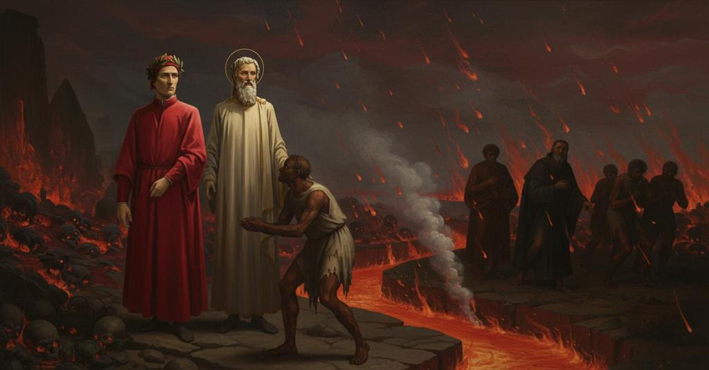

Inferno — Canto 15

1
Ora cen porta l’un de’ duri margini;
Now one of the hard banks carries us on;
今や我らを運ぶのは、硬い土手の一つ。
2
e ’l fummo del ruscel di sopra aduggia,
and the steam of the brook casts a shadow above,
そして小川の蒸気は上を覆い、
3
sì che dal foco salva l’acqua e li argini.
so that from the fire it saves the water and the banks.
火から水と土手を守っていた。
4
Quali Fiamminghi tra Guizzante e Bruggia,
As the Flemings between Wissant and Bruges,
フランドル人がグイッツァンテとブルッヘの間で、
5
temendo ’l fiotto che ’nver’ lor s’avventa,
fearing the flood that rushes toward them,
彼らに向かって押し寄せる洪水を恐れ、
6
fanno lo schermo perché ’l mar si fuggia;
make their screen so that the sea is driven back;
海を退けるために防波堤を築くように、
7
e quali Padoan lungo la Brenta,
and as the Paduans along the Brenta,
またパドヴァ人がブレンタ川に沿って、
8
per difender lor ville e lor castelli,
to defend their towns and their castles,
その館や城を守るため、
9
anzi che Carentana il caldo senta:
before Carinthia feels the heat:
カレンターナが熱を感じる前に、
10
a tale imagine eran fatti quelli,
in such a likeness were those banks made,
そのような姿に、あれら（土手）は作られていた。
11
tutto che né sì alti né sì grossi,
although not so high nor so thick,
もっとも、それほど高くも厚くもなかったが、
12
qual che si fosse, lo maestro félli.
whoever the master was, had he made them.
誰であれ、それを作った師がそうしたのだ。
13
Già eravam da la selva rimossi
Already we were so far removed from the wood
すでに我らは森からそれほど遠ざかっており、
14
tanto, ch’i’ non avrei visto dov’ era,
that I would not have seen where it was,
それがどこにあったか見えなかっただろう、
15
perch’ io in dietro rivolto mi fossi,
had I turned myself to look back,
たとえ私が後ろを振り返ったとしても。
16
quando incontrammo d’anime una schiera
when we met a troop of souls
その時、我らは魂の一団に出会った。
17
che venian lungo l’argine, e ciascuna
that came along the bank, and each one
彼らは土手に沿ってやって来て、一人一人が
18
ci riguardava come suol da sera
looked at us as one is accustomed in the evening
我らを眺めていた、夜に人がよく
19
guardare uno altro sotto nuova luna;
to look at another under a new moon;
新月の下で他人を見るように。
20
e sì ver’ noi aguzzavan le ciglia
and so toward us they sharpened their brows
そして我らの方へ眉をひそめていた、
21
come ’l vecchio sartor fa ne la cruna.
as an old tailor does at the eye of his needle.
老いた仕立屋が針の穴にするように。
22
Così adocchiato da cotal famiglia,
Thus eyed by such a family,
そのような一団からそうして見つめられ、
23
fui conosciuto da un, che mi prese
I was recognized by one, who took me
私はある者に気づかれた。彼は私の
24
per lo lembo e gridò: «Qual maraviglia!».
by the hem and cried out: “What a marvel!”.
裾を掴んで叫んだ。「何と驚くべきことか！」。
25
E io, quando ’l suo braccio a me distese,
And I, when he stretched his arm toward me,
そして私は、彼が腕を私に伸ばした時、
26
ficcaï li occhi per lo cotto aspetto,
fixed my eyes on his baked appearance,
その焼けた姿に目を凝らした、
27
sì che ’l viso abbrusciato non difese
so that his scorched face did not prevent
そのため、焼け爛れた顔も、
28
la conoscenza süa al mio ’ntelletto;
its recognition by my intellect;
私の知性が彼を認識するのを妨げなかった。
29
e chinando la mano a la sua faccia,
and lowering my hand to his face,
そして彼の方へと手を伸ばし、
30
rispuosi: «Siete voi qui, ser Brunetto?».
I replied: “Are you here, ser Brunetto?”.
私は答えた。「ブルネット先生、あなたがここに？」。
31
E quelli: «O figliuol mio, non ti dispiaccia
And he: “O my son, do not be displeased
すると彼は言った。「おお、我が子よ、どうか気を悪くしないでくれ、
32
se Brunetto Latino un poco teco
if Brunetto Latino a little with you
もしこのブルネット・ラティーノがしばし汝と共に
33
ritorna ’n dietro e lascia andar la traccia».
turns back and lets the troop go on.”
後ろに戻り、一行を先に行かせても」。
34
I’ dissi lui: «Quanto posso, ven preco;
I said to him: “With all my power, I pray you for it;
私は彼に言った。「心から、あなたにお願いします。
35
e se volete che con voi m’asseggia,
and if you wish that I sit down with you,
もし、あなたと共に私が座ることをお望みなら、
36
faròl, se piace a costui che vo seco».
I will do it, if it pleases him with whom I go.”
そうしましょう、もし私と共に行くこのお方がお許しになるなら」。
37
«O figliuol», disse, «qual di questa greggia
“O son,” he said, “whoever of this flock
「おお、息子よ」と彼は言った。「この群れのうち誰であろうと
38
s’arresta punto, giace poi cent’ anni
stops for a moment, lies then for a hundred years
一瞬でも立ち止まれば、その後百年は横たわることになるのだ、
39
sanz’ arrostarsi quando ’l foco il feggia.
without fanning himself when the fire strikes.
火が身を打つ時、それを払うこともできずに。
40
Però va oltre: i’ ti verrò a’ panni;
Therefore go on: I will come at your hem;
だから、先へ進んでくれ。私は汝の衣の傍らを行こう。
41
e poi rigiugnerò la mia masnada,
and then I will rejoin my troop,
そしてその後、私の仲間たちに再び加わるとしよう、
42
che va piangendo i suoi etterni danni».
which goes along weeping its eternal damages.”
彼らは永遠の罰を嘆きながら歩いているのだ」。
43
Io non osava scender de la strada
I did not dare descend from the path
私は道から下りて
44
per andar par di lui; ma ’l capo chino
to go level with him; but my head bowed
彼と並んで歩む勇気はなかった。ただ頭を垂れ
45
tenea com’ uom che reverente vada.
I held like a man who walks with reverence.
敬虔な人が歩むようにしていた。
46
El cominciò: «Qual fortuna o destino
He began: "What fortune or destiny
彼は始めた。「いかなる幸運か運命が
47
anzi l’ultimo dì qua giù ti mena?
before your last day leads you down here?
最期の日より先に、そなたをここへ導いたのか？
48
e chi è questi che mostra ’l cammino?».
and who is this one who shows the way?".
そして道を示すこのお方はどなたか？」と。
49
«Là sù di sopra, in la vita serena»,
"Up there above, in the serene life,"
「あの上、晴朗な生において」
50
rispuos’ io lui, «mi smarri’ in una valle,
I answered him, "I lost myself in a valley,
私は彼に答えた、「私はある谷間で道に迷いました、
51
avanti che l’età mia fosse piena.
before my age was full.
私の人生が満ちる前に。
52
Pur ier mattina le volsi le spalle:
Just yesterday morning I turned my back on it:
つい昨日の朝、それに背を向けたばかりです。
53
questi m’apparve, tornand’ ïo in quella,
this one appeared to me, as I was returning into it,
私がそこへ戻ろうとした時、このお方が現れ、
54
e reducemi a ca per questo calle».
and he leads me home by this path".
この道を通って私を故郷へ連れ戻してくださるのです」。
55
Ed elli a me: «Se tu segui tua stella,
And he to me: "If you follow your star,
すると彼は私に言った。「もしそなたが自らの星に従うなら、
56
non puoi fallire a glorïoso porto,
you cannot fail to reach a glorious port,
輝かしい港に至り損なうことはないだろう、
57
se ben m’accorsi ne la vita bella;
if I discerned well in the beautiful life;
もし私が美しき生において正しく見抜いていたならば。
58
e s’io non fossi sì per tempo morto,
and if I had not died so early,
そしてもし私がこれほど早く死んでいなかったなら、
59
veggendo il cielo a te così benigno,
seeing heaven so benevolent to you,
天がそなたにかくも慈悲深いことを見て、
60
dato t’avrei a l’opera conforto.
I would have given you comfort in your work.
そなたの偉業に力添えをしたであろうに。
61
Ma quello ingrato popolo maligno
But that ungrateful, malignant people
だが、あの恩知らずで邪悪な民は、
62
che discese di Fiesole ab antico,
that came down from Fiesole in ancient times,
古にフィエーゾレから下りてきて、
63
e tiene ancor del monte e del macigno,
and still smacks of the mountain and the rock,
今なお山と岩の性質を持つ者どもは、
64
ti si farà, per tuo ben far, nimico;
will, for your good deeds, become your enemy;
そなたの善行ゆえに、そなたの敵となるだろう。
65
ed è ragion, ché tra li lazzi sorbi
and there is reason, for among the bitter sorbs
それも道理だ、なぜなら酸っぱいナナカマドの間に
66
si disconvien fruttare al dolce fico.
it is unfitting for the sweet fig to fruit.
甘いイチジクが実るのはふさわしくないからな。
67
Vecchia fama nel mondo li chiama orbi;
Old fame in the world calls them blind;
世の古き言い伝えは彼らを盲目と呼ぶ。
68
gent’ è avara, invidiosa e superba:
they are a people greedy, envious, and proud:
貪欲で、嫉妬深く、傲慢な民だ。
69
dai lor costumi fa che tu ti forbi.
from their customs make sure that you cleanse yourself.
彼らの風習から、そなたは自らを清めよ。
70
La tua fortuna tanto onor ti serba,
Your fortune holds in store for you such honor,
そなたの運命はかくも大いなる名誉をそなたのために用意している、
71
che l’una parte e l’altra avranno fame
that the one party and the other will have hunger
そのため一方の党派も他方もそなたを
72
di te; ma lungi fia dal becco l’erba.
for you; but the grass will be far from the goat's beak.
渇望するだろう。だが草は嘴から遠くにあろう。
73
Faccian le bestie fiesolane strame
Let the Fiesolan beasts make fodder
フィエーゾレの獣どもは自らの体を
74
di lor medesme, e non tocchin la pianta,
of themselves, and not touch the plant,
飼い葉とするがいい、そしてあの草木には触れるな、
75
s’alcuna surge ancora in lor letame,
if any still springs up in their dung,
もし彼らの糞土の中に今なお芽生えるものがあるなら、
76
in cui riviva la sementa santa
in which the holy seed may live again
その中には聖なる種が生き返っている、
77
di que’ Roman che vi rimaser quando
of those Romans who remained there when
かのローマ人たちの種が。彼らはそこに留まったのだ、
78
fu fatto il nido di malizia tanta».
the nest of so much malice was made".
かくも大いなる悪意の巣が作られた時に」。
79
«Se fosse tutto pieno il mio dimando»,
"If my request were fully granted,"
「もし私の願いがすべて満たされるのでしたら」
80
rispuos’ io lui, «voi non sareste ancora
I answered him, "you would not yet be
私は彼に答えた、「あなたはまだ
81
de l’umana natura posto in bando;
placed in exile from human nature;
人の世から追放されてはいないでしょうに。
82
ché ’n la mente m’è fitta, e or m’accora,
for in my mind is fixed, and now it grieves my heart,
なぜなら私の心に刻まれ、今も私を悲しませるのは、
83
la cara e buona imagine paterna
the dear and good paternal image
あなたの、あの懐かしく、善良な、父のような面影なのです、
84
di voi quando nel mondo ad ora ad ora
of you when in the world, from time to time,
あなたがこの世で、折に触れて
85
m’insegnavate come l’uom s’etterna:
you taught me how man makes himself eternal:
人がいかにして永遠の存在となるかを教えてくださった時の。
86
e quant’ io l’abbia in grado, mentr’ io vivo
and how much I hold it in gratitude, while I live
そして私がそれをどれほど感謝しているかは、私が生きる限り
87
convien che ne la mia lingua si scerna.
it is fitting that it be discerned in my tongue.
私の言葉のうちに示されねばなりません。
88
Ciò che narrate di mio corso scrivo,
What you narrate of my course I write,
あなたが語られた私の道行きについては、私は書き留め、
89
e serbolo a chiosar con altro testo
and keep it to be glossed with other text
別のテキストと共に注釈を施すために取っておきます
90
a donna che saprà, s’a lei arrivo.
by a lady who will know, if I reach her.
かの貴婦人のために。もし私が彼女のもとへたどり着けたなら、彼女は知るでしょう。
91
Tanto vogl’ io che vi sia manifesto,
This much I want to be clear to you,
これだけはあなたに明らかにしておきたい、
92
pur che mia coscïenza non mi garra,
so long as my conscience does not chide me,
ただ私の良心が私を咎めない限り、
93
ch’a la Fortuna, come vuol, son presto.
that to Fortune, as she wills, I am ready.
私は運命の女神に、その望むままに、身を委ねる覚悟です。
94
Non è nuova a li orecchi miei tal arra:
Such a pledge is not new to my ears:
そのような予言は私の耳には初めてではありません。
95
però giri Fortuna la sua rota
therefore let Fortune turn her wheel
ですから運命の女神がその車輪を回すがいい
96
come le piace, e ’l villan la sua marra».
as she pleases, and the peasant his hoe".
その望むままに、そして農夫がその鍬を振るうように」。
97
Lo mio maestro allora in su la gota
My master then upon his right
その時、私の師は右の
98
destra si volse in dietro e riguardommi;
cheek turned back and looked at me;
頬の方へ振り返り、私を見つめ、
99
poi disse: «Bene ascolta chi la nota».
then said: "He listens well who takes note of it".
そして言った。「それを心に留める者は、よく聞いている」。
100
Né per tanto di men parlando vommi
Nor for all that do I cease speaking as I go
それでもなお、わたしは話しながら進み
101
con ser Brunetto, e dimando chi sono
with ser Brunetto, and I ask who are
ブルネット先生と共に、そして尋ねる、誰であるかと
102
li suoi compagni più noti e più sommi.
his most noted and most eminent companions.
彼の仲間で、最も名高く、最も優れた者たちは。
103
Ed elli a me: «Saper d’alcuno è buono;
And he to me: “To know of some is good;
すると彼はわたしに：「何人かを知るのは良いことだ。
104
de li altri fia laudabile tacerci,
of the others it will be laudable to be silent,
他の者については、沈黙を守るのが賢明だろう、
105
ché ’l tempo saria corto a tanto suono.
for time would be too short for so much naming.
それほど多くの名を挙げるには、時が短すぎるだろうから。
106
In somma sappi che tutti fur cherci
In short, know that all of them were clerics
要するに、知っておくがよい、皆が聖職者であり、
107
e litterati grandi e di gran fama,
and great men of letters and of great fame,
偉大な学者であり、大いなる名声の持ち主だったと、
108
d’un peccato medesmo al mondo lerci.
in the world soiled by one and the same sin.
この世では同じ一つの罪で汚れていたのだ。
109
Priscian sen va con quella turba grama,
Priscian goes on with that wretched crowd,
プリスキアヌスは、あの惨めな群れと共に行く、
110
e Francesco d’Accorso anche; e vedervi,
and Francesco d’Accorso also; and you could have seen there,
そしてフランチェスコ・ダッコルソもだ。そしてそこに、
111
s’avessi avuto di tal tigna brama,
if you had had a craving for such scurf,
もしお前がそのような瘡蓋（かさぶた）を見たいと望んだなら、
112
colui potei che dal servo de’ servi
him who by the servant of the servants
「僕（しもべ）らの僕」によって、
113
fu trasmutato d’Arno in Bacchiglione,
was transferred from the Arno to the Bacchiglione,
アルノからバッキリオーネへと移され、
114
dove lasciò li mal protesi nervi.
where he left his ill-strained sinews.
そこで悪しき目的に使った肉体を置き去りにした者を、見ることもできたろう。
115
Di più direi; ma ’l venire e ’l sermone
I would say more; but my coming and my speech
もっと語りたいところだが、わたしの歩みと話は
116
più lungo esser non può, però ch’i’ veggio
cannot be longer, for I see
これ以上長くは続けられない、なぜならわたしには見える
117
là surger nuovo fummo del sabbione.
new smoke rising there from the sandy plain.
あそこに砂地から新たな煙が立ち上るのが。
118
Gente vien con la quale esser non deggio.
People come with whom I must not be.
わたしが共にいるべきではない人々が来る。
119
Sieti raccomandato il mio Tesoro,
Let my *Tesoro* be commended to you,
お前にわたしの『テゾーロ』を託そう、
120
nel qual io vivo ancora, e più non cheggio».
in which I am still alive, and I ask no more.”
その中でわたしは今も生きている、それ以上は望まない」。
121
Poi si rivolse, e parve di coloro
Then he turned back, and seemed like one of those
そして彼は身を翻し、あたかも、
122
che corrono a Verona il drappo verde
who at Verona run for the green cloth
ヴェローナの野で緑の布を賭けて走る
123
per la campagna; e parve di costoro
across the countryside; and of them he seemed
者たちのようだった。そして彼らの中で、
124
quelli che vince, non colui che perde.
the one who wins, not the one who loses.
敗者ではなく、勝者のように見えた。